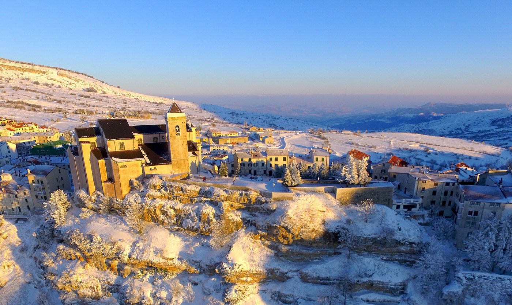
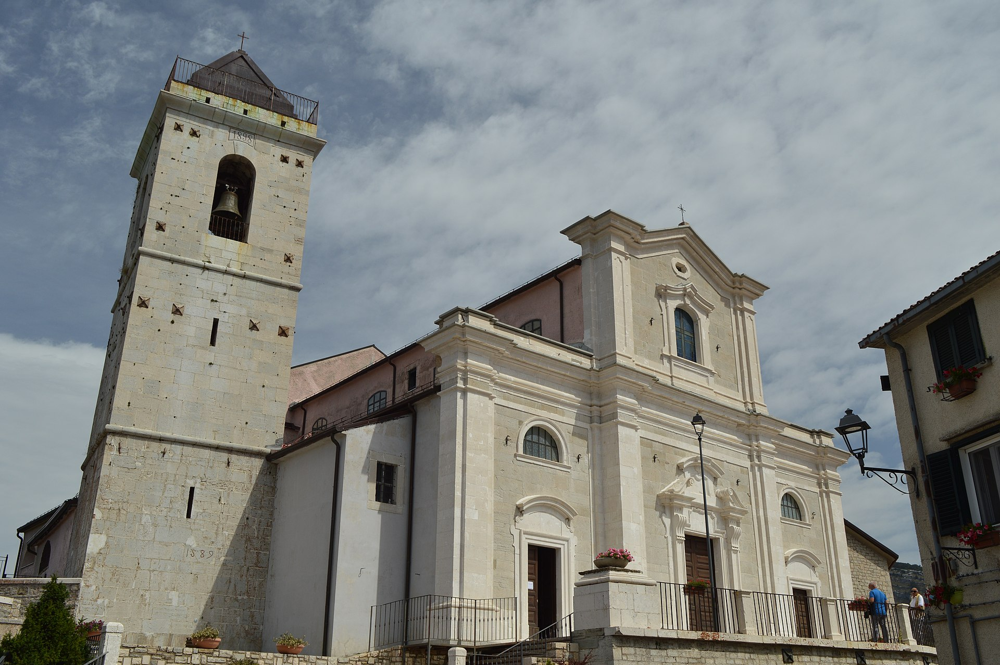
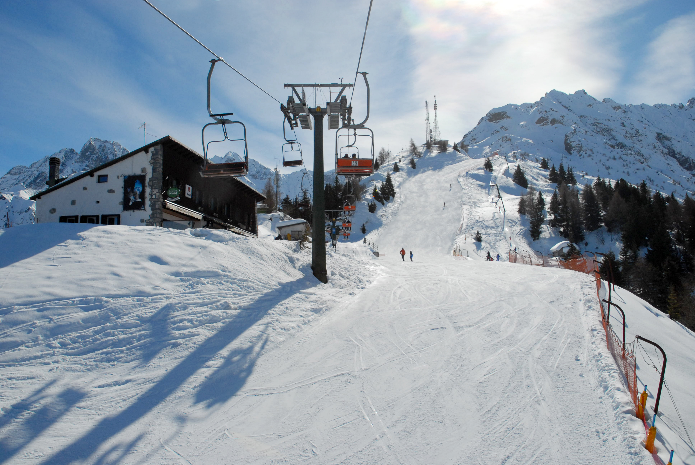
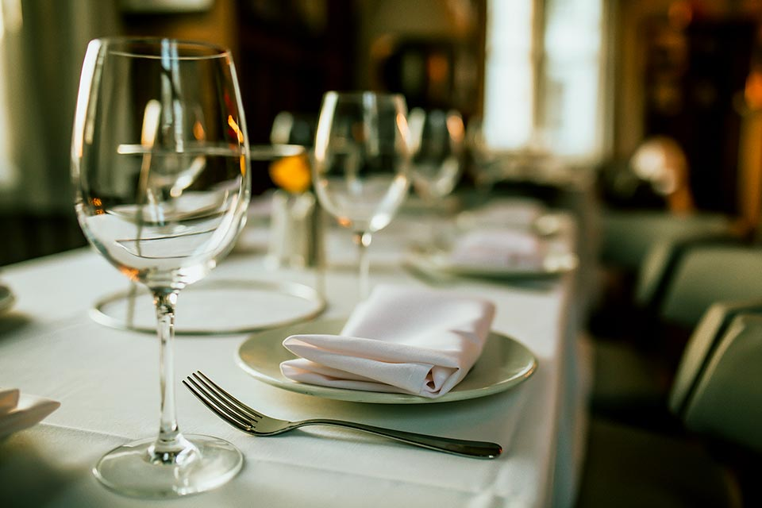

Capracotta
Capracotta è un comune italiano di 799 abitanti[2] della provincia di Isernia in Molise. Il nome prende origine dai termini latini capra ("capra") e cocta ("essiccata al sole"), probabilmente a causa dell'usanza dei pastori della zona di conservare la carne destinata all'alimentazione essiccandola al sole. Capracotta ospita il giardino della flora appenninica, un orto botanico naturale fra i più alti d'Italia (1525 m s.l.m.), in cui vengono conservate e tutelate le specie vegetali della flora montana e altomontana autoctona dell'Appennino centro-meridionale. Si tratta dell'unico orto botanico della regione Molise, ponendolo come un importante osservatorio sulla biodiversità situato in un contesto suggestivo per la presenza di numerosi habitat naturali, tra i quali praterie, faggete, roccaglie, zone umide, arbusteti, insieme a zone tematiche curate dedicate alle piante officinali, alle varietà orticole autoctone.
Chiesa di Santa Maria in Cielo Assunta
Si trova sulla parte più alta del paese, nel rione Terra Vecchia, e fu sede della collegiata. Non conosciamo l'anno della fondazione della chiesa. Sappiamo che agli inizi del Settecento fu ampliata e completamente ristrutturata. È citata per la prima volta in un documento del 1326 sotto il titolo di "Sancte Marie de Capracocta". Della vecchia costruzione, è visibile un bassorilievo del campanile che reca il simbolo dell'Albero della Vita, d'epoca rinascimentale
Impianti Sciistici
Capracotta è anche una nota località sciistica dotata di due impianti molto importanti, uno dedicato allo sci alpino, in località Monte Capraro, corredato di seggiovia, e un altro per lo sci di fondo che si trova invece in località Prato Gentile, ed è stato sede dei Campionati Italiani Assoluti di sci di fondo nel 1997.
Una cucina gourmet nell'alto Molise
Il panorama enogastronomico di Capracotta è l’ideale per gli amanti del gusto: custodi di tradizioni e innovatori dei sapori appenninici si incontrano in cucina per un’offerta variegata e originale, perfettamente bilanciata con la dedizione tipica dell’Alto Molise. È il territorio il segreto del gusto. Aria pura, acqua e terra di montagna conferiscono il sapore deciso ai salumi, carni, formaggi d’alta quota.